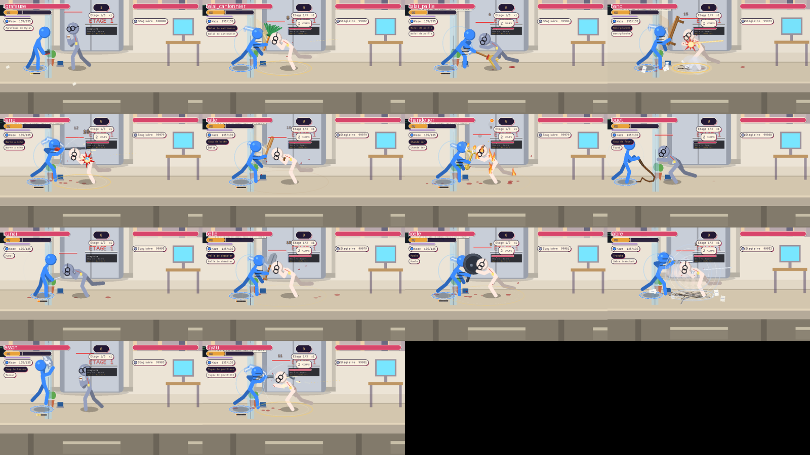

Captures du vrai moteur (400 px, 48 couleurs). Deux nouveautes : l'arme comique « pantoufles » (claques, puis lancer a très gros dégâts et forte expulsion) et la règle commune a TOUTES les armes de melee : au dernier point de durabilite, le coup devient un lancer qui brise l'arme sur la cible. Le lancer a distance par Lourde existait déjà et reste.
